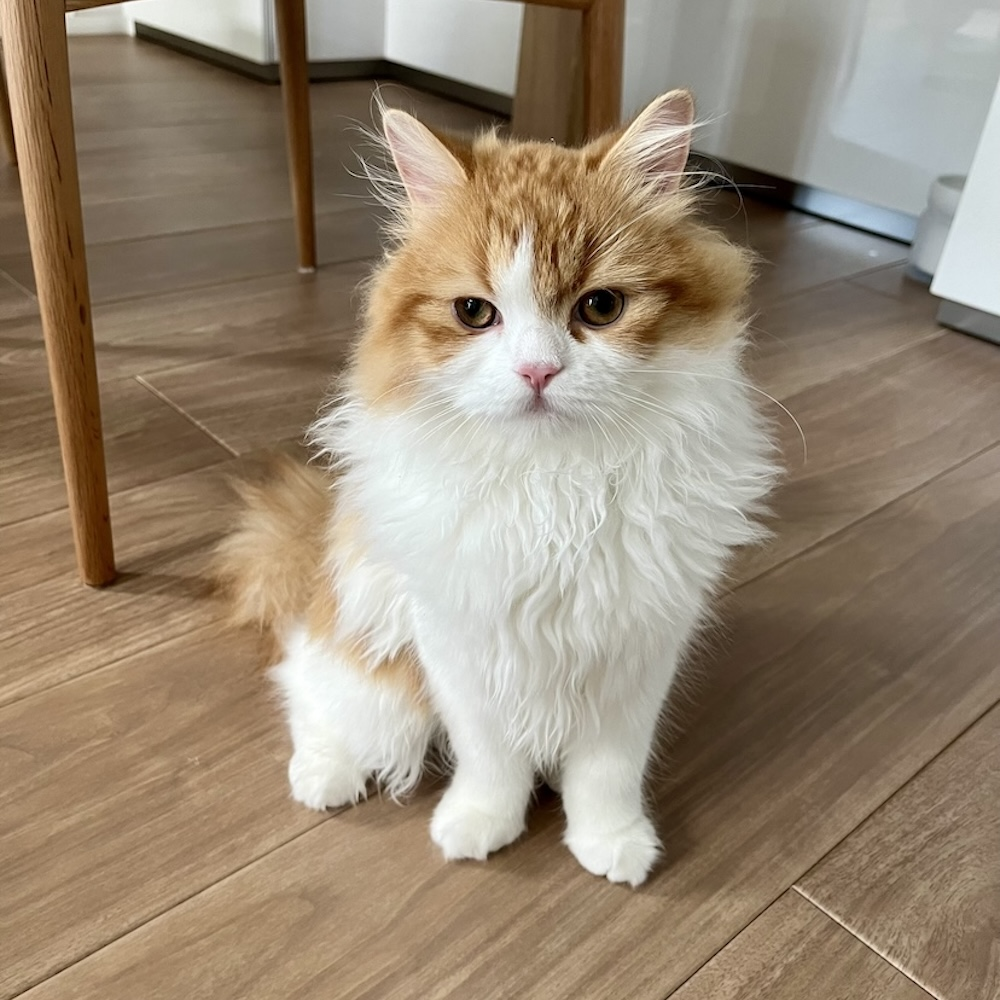
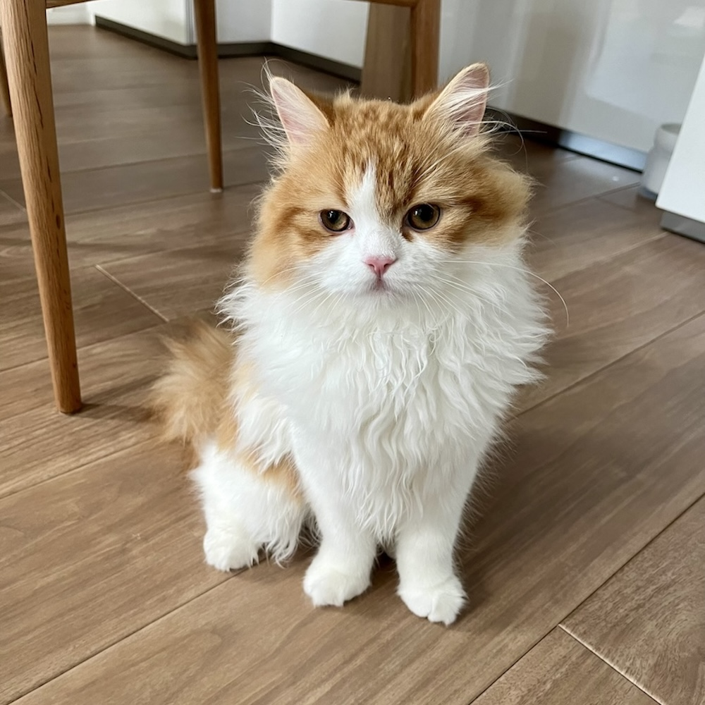

スコティッシュフォールドのコメちゃんのブログを始めます。
コメちゃんを迎えてからの暮らしを記事にしていきます。
次の記事から本編スタートです。
新着情報はX(旧Twitter)でお知らせしたいと思います。

2024/8/12
スコティッシュフォールドのコメちゃんのブログを始めます。
コメちゃんを迎えてからの暮らしを記事にしていきます。
次の記事から本編スタートです。
新着情報はX(旧Twitter)でお知らせしたいと思います。
